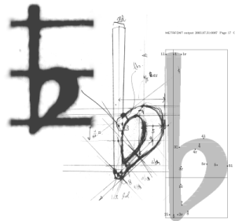
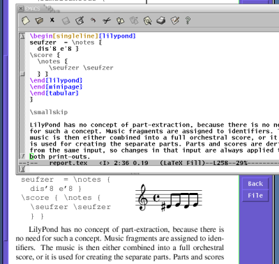
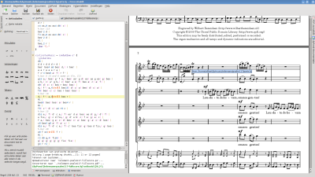

Features
Elegance
Excellent classical engraving
LilyPond allows musicians to produce elegant sheet music that is easy to read. Its developer community has spent thousands of hours developing powerful music engraving software that results in beautifully engraved music. All of LilyPond’s style settings, font designs and algorithms have been inspired by the finest hand-engraved music. LilyPond output has the same strong, balanced and elegant look as the best-engraved classical scores. This is further explained in our Essay.
Effective layout choices
Spend less time with tweaking the output; LilyPond gets the formatting correct right from the start. It determines spacing by itself, and breaks lines and pages to provide a tight and uniform layout. Clashes between lyrics, notes, and chords are resolved and slurs and beams are sloped, automatically!
Ease of use
Text-based input
LilyPond takes ASCII input, which you can produce in your favorite text editor, quickly and comfortably. The input contains all the information, so there is no need to remember complex command sequences: simply save a file for later reference.
Mix music and text
Put fragments of music into texts without cutting and pasting pictures. Integrate music into LaTeX or HTML seamlessly, or add music to OpenOffice.org with OOoLilyPond. Plugins are also available to allow LilyPond code in various blogs and wikis, making online collaboration possible.
Accessibility
Text-based input also makes score-writing possible for users with severe physical disabilities. Dexterity-impaired users who are unable to type or control a computer mouse can use speech-recognition software to edit LilyPond files. Even users who are totally blind can use screen-reading software to write LilyPond files – an impossible task in graphical-based score-writing programs.
Extensible design
All settings can be changed to suit your personal typographical taste. If that still is not enough, there is always the built-in scripting language Scheme, a dialect of the powerful language LISP. Settings, variables and functions are all documented in the comprehensive program reference manual.
Environment
Free software
LilyPond can be downloaded free of charge! Yep - It’s free. Get it from the download page.
It’s also free (as in “speech”) software. It comes with source code, and permission to change and copy it. So, are you irritated by a bug, or yearning for a feature? Simply add it yourself, or pay someone else to do it.
Excellent support
LilyPond runs on all popular platforms: GNU/Linux, MacOS X, and Windows. LilyPond comes with extensive documentation and hundreds of example files. There is an active user community answering questions on the lilypond-user mailing list, while the development team makes sure that problems are solved quickly.
Enhanced editors
Several developers, themselves active LilyPond users, have also written tools specifically aimed at making the process of editing LilyPond files faster and more effective. For some examples, see Easier editing.
Where now?
Still not convinced? Look at some specific Examples. If you’ve already decided to try LilyPond, first read about our Text input.
Other languages: česky, deutsch, español, français, magyar, italiano, 日本語, nederlands, 中文.
About automatic language selection.